同じリスト
赤く警告
確認者へ通知
1ホーム画面に入れる
届いた招待リンクを開いて、アプリとしてホーム画面に追加します。
Safariで開く
共有ボタンを押す
ホーム画面に追加
このアイコンから開く
Chromeで開く
右上の︙を押す
ホーム画面に追加
このアイコンから開く
2チームに参加する
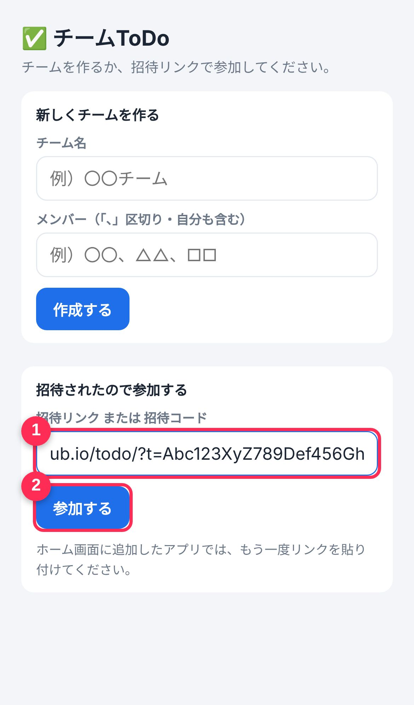
- 1招待リンクをもう一度貼り付け（リンクを長押し→コピー）
- 2「参加する」を押す
3名前を選んで、通知をON
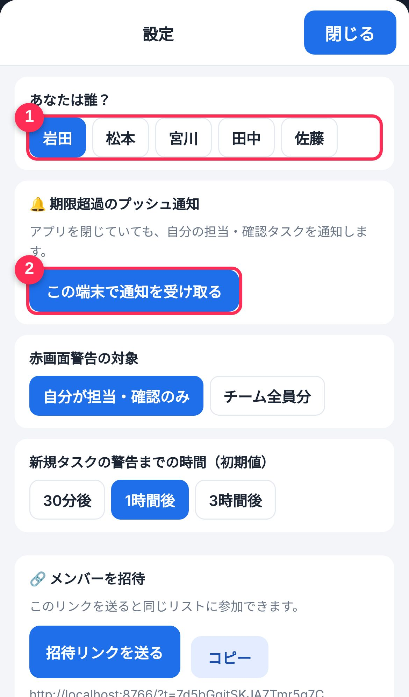
- 1「あなたは誰？」で自分の名前をタップ
- 2「この端末で通知を受け取る」を押す
"チームToDo"は通知を送信します。よろしいですか？通知方法は…
確認が出たら 「許可」
4画面の見方
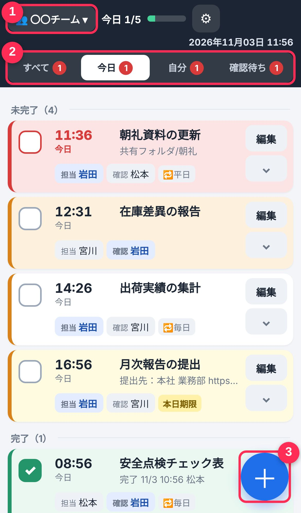
- 1今のチーム名（押すと切り替え）
- 2表示の切り替え：すべて／今日／自分（自分の担当・確認）／確認待ち 赤い数字は要対応の件数
- 3タスクを追加
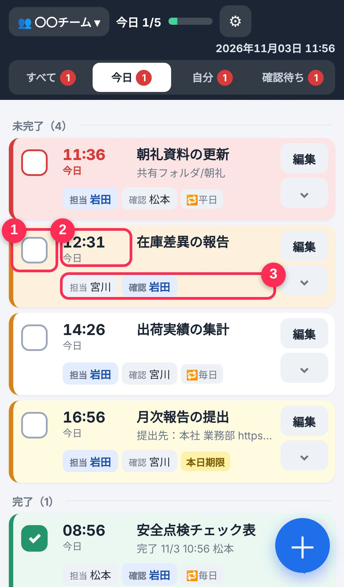
- 1チェック欄（押すと完了）
- 2期限 赤＝期限切れ オレンジ＝1時間以内 黄色＝前もって登録した「今日が期限」
- 3担当者と確認者（自分は青色）
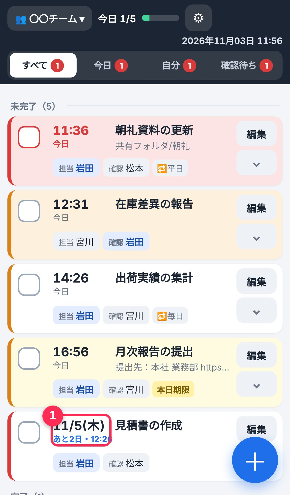
右側の 「編集」 で内容を変更、その下の ⌄ で詳細が下に開きます。
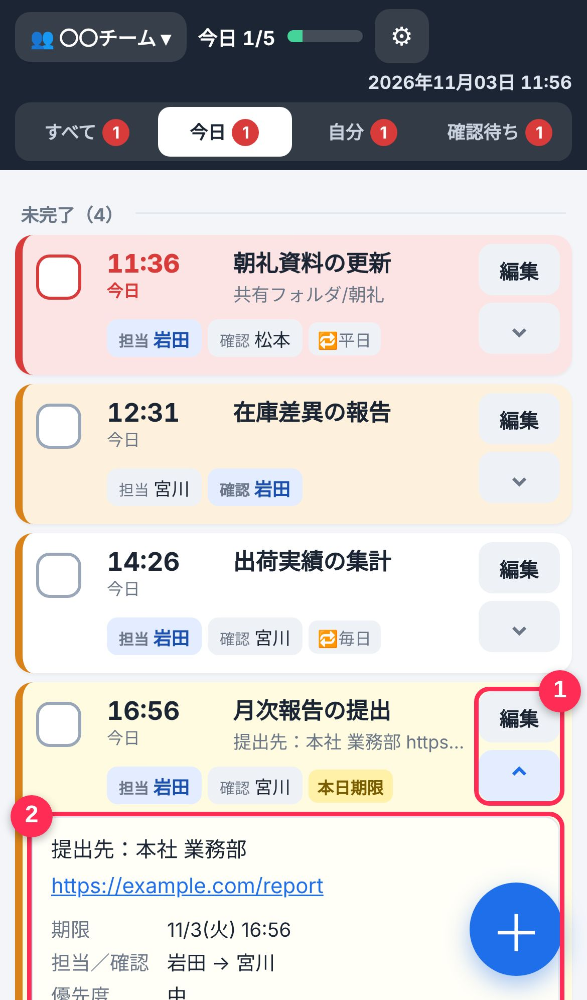
- 1「編集」で変更／⌄ で詳細を開く・閉じる
- 2メモ・期限・作成者などの詳細（URLは押すと開けます）
1 今日以外のタスクは 日付 と あと○日 で表示されます。
5タスクを追加する
右下の ＋ を押して、タップで選ぶだけ。
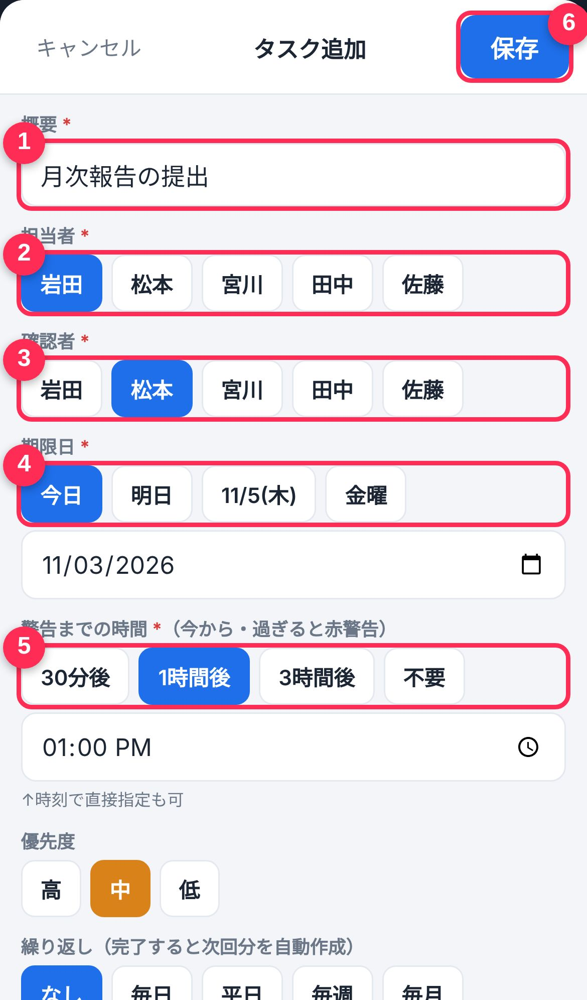
- 1概要（やること）を入力
- 2担当者（やる人）
- 3確認者（チェックする人）
- 4期限日
- 5警告までの時間：30分後／1時間後／3時間後に赤い警告。警告がいらなければ「不要」
※明日以降の日付を選ぶと9:00／12:00／15:00／17:00の時刻選択に変わります - 6最後に「保存」
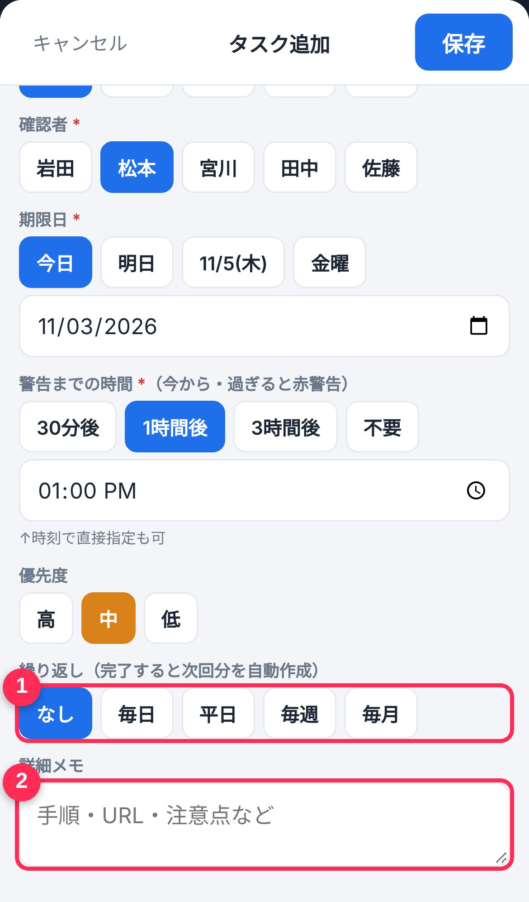
- 1繰り返し：毎日・平日・毎週・毎月のタスクは、完了すると次回分が自動で作られます（その日になるまで表示されません）
- 2詳細メモ：手順や保存場所など
6終わったらチェック
チェック欄を押すと、タスクが下の「完了」へ移動します。
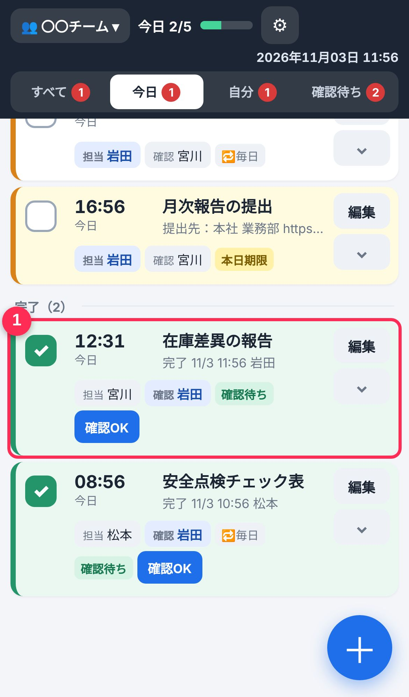
今日のタスクが全部終わると 🎉 が出ます。間違えたら、もう一度押すと元に戻せます。
7黄色のお知らせ・赤い警告
前もって登録したタスクは、期限の日になると黄色でお知らせします（朝8時に通知、アプリを開いた時にも表示）。
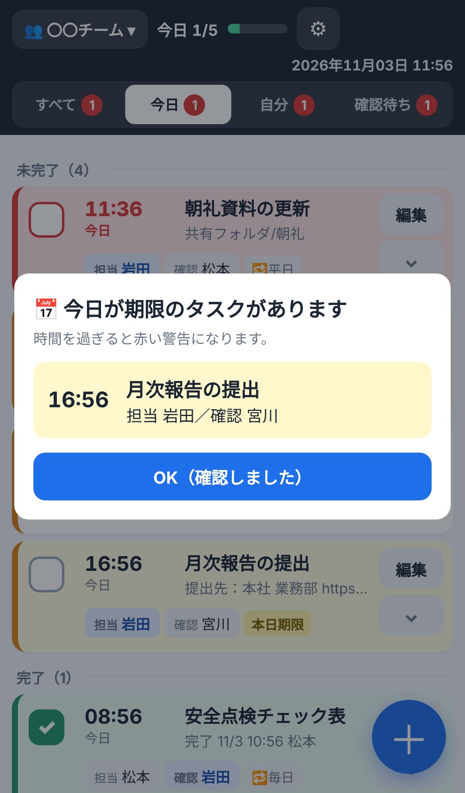
確認したら 「OK」
警告の時間を過ぎると…
アプリを閉じていても 通知 が届きます（完了するまで30分ごと）
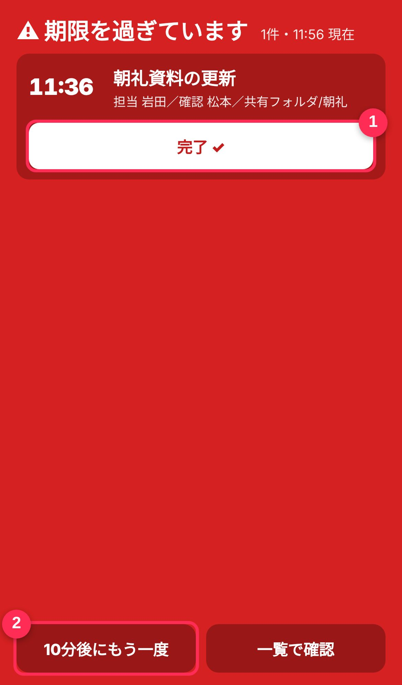
アプリを開くと 画面全体が赤く なります
- 1終わったら「完了✓」
- 2まだなら「10分後にもう一度」（10分後に再び赤くなります）
8確認者の操作
担当者が完了すると、確認者に通知が届きます。
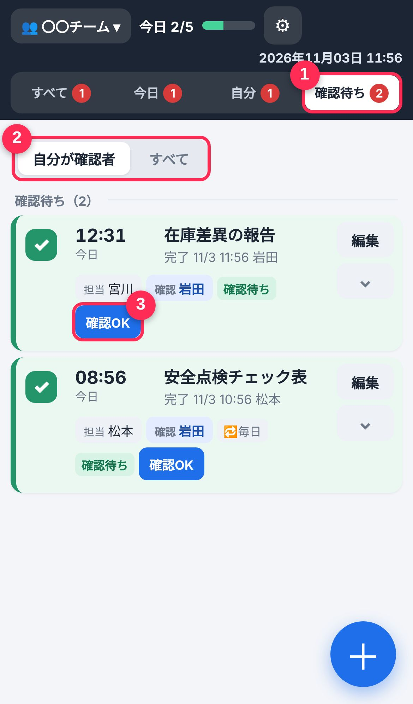
- 1「確認待ち」タブを開く（確認待ちは緑色で表示）
- 2「自分が確認者」／「すべて」（チーム全員分）を切り替え
- 3内容を確かめて「確認OK」
9メンバー招待・チーム切り替え
⚙（設定）から、新しいメンバーに招待リンクを送れます。
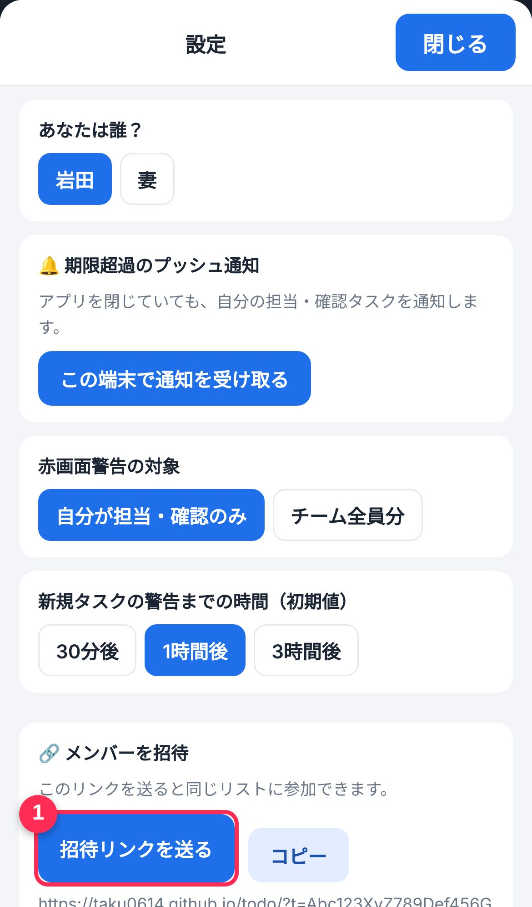
- 1「招待リンクを送る」→ LINEなどで送信
いくつかのチームに入っている場合は、左上のチーム名から切り替えます。
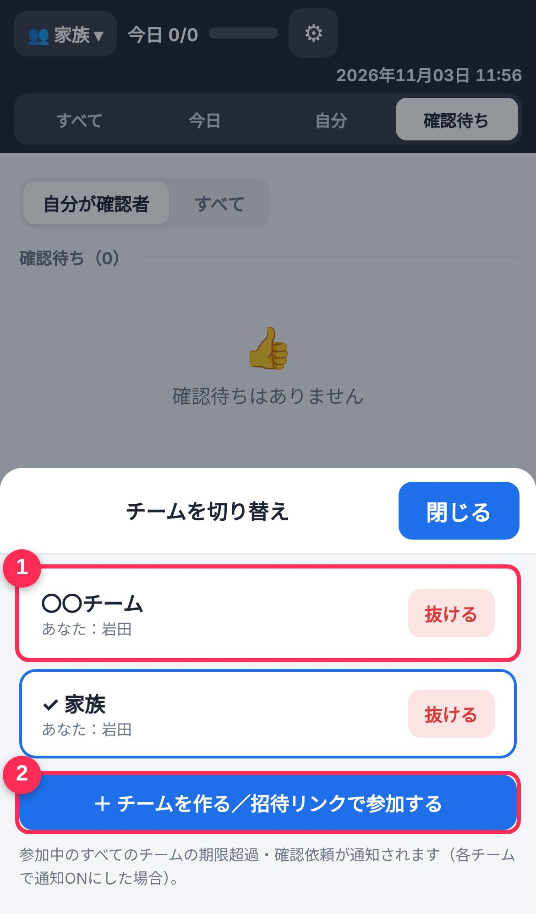
- 1チームを押すと切り替わる
- 2別のチームを作る・参加する
？困ったとき
通知が届かない
① ホーム画面のアイコンから開いているか（iPhoneはSafariのままでは通知できません）
② ⚙設定で自分の名前を選び、「通知を受け取る」を押したか
③ スマホの「設定 → 通知 → チームToDo」で許可になっているか
※通知は1〜2分ほど遅れることがあります。
上にオレンジ色の帯が出ている
電波の弱い場所では一時的に出ることがあります。電波の良い場所で開き直してください。直らない場合は管理者に連絡してください。
他の人の追加・完了が反映されない
通常は数秒で全員の画面に反映されます。アプリを一度閉じて開き直してください。
間違えて完了にした
もう一度チェック欄を押すと未完了に戻ります。
機種変更した・名前を間違えた
新しいスマホで招待リンクから参加し直し、⚙設定で名前を選んでください。データはチームに残っています。